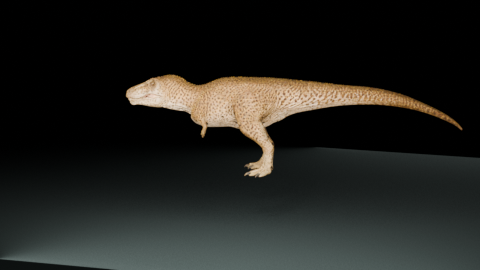
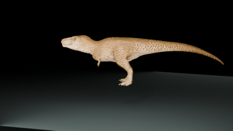
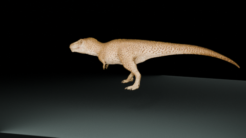

A body finds its rhythm.
Our first question was not how fast it could go. It was whether the animal could settle into a gait that reads as weight: a planted foot, a delayed tail, a head that keeps looking.
Measured. The V5 pack carries a 60 Hz baked animation and an authored root-motion variant. We render the in-place take here so the animal stays framed and the foot rhythm is easy to study.
Read as. A calm locomotion study. The feeling of mass is our interpretation, not a claim about a living individual.
Small signals carry the weight.
The mouth is quiet in neutral. The neck, arms, and tail do just enough to keep the silhouette from becoming a statue.



The quiet body, then the choice.
We gave the same calibrated neutral a few different reasons to move. Select a moment and let the evidence stay visible.
Bite: an intentional gape, contact, then a closed recovery. The sequence is authored behavior for the study.
Built to be read.
Ground contact
Protected leg and sole tracks keep the walk evidence legible across the in-place and root-motion variants.
Jaw calibration
V5 measured a 50° neutral closure for this mesh. Open jaw is reserved for eating, bite, and roar moments.
Authored handoffs
Transitions are present in the source pack and documented in the manifest. This page focuses on the 21 base/action/locomotion clips.
One body, many reads
We keep taxonomy, mechanics, and presentation separate so this family can carry another species without a bespoke runtime class.
This is a study, not a reconstruction.
We used a validated procedural V5 animation pack and its embedded material to make a readable, browser-ready field journal. The movement, timing, and behavioral language are game interpretation. Scientific uncertainty stays in the record; the render is here to make the questions visible.
Source. Tarbosaurus V5 animation pack · 37 clips · Blender 5.2 render · local assets only.